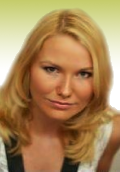

"Koučování je jako jízda kočárem, místy příjemná, místy může být nepohodlná. Někdy slunce krásně svítí, nebe je modré, jindy se na cestě mohou vyskytnout výmoly, někdy udivíte nečekané dech beroucí scenérie a příroda Vám ukáže všechny své poklady. Vždy si ale můžete říci, že to stálo za to."
SPOLUPRÁCE

Linda Kripnerová - s Lindou spolupracujeme zejména v rámci programu Změna životního stylu.
Linda se více jak 7 let zabývá problematikou dietologie. Specializaci výživového specialisty ukončila roku 2008 a v roce 2015 ukončí na Karlově univerzitě
magisterský obor se specializací na aktivity podporující zdraví, kterou je dietologie nedílnou součástí. Na redukci hmotnosti žen napsala Linda dvě odborné
práce a 6 let má praxi, při níž byla u shazování stovek kil, dostávání se do formy, zvyšování sebevědomí, boje proti alergiím, migrénám a mnoha jiným
onemocněním, které s výživou mnohdy úzce souvisí.
Kontaktní údaje:
Mgr. Linda Kripnerová
Tel.: +420 725 207 580
linda.kripnerova@studiolili.cz
www.studiolili.cz
www.facebook.com/studiolili.cz
Majka Šulová
- s Majkou spolupracujeme v programu Změna životního stylu, během kterého si můžete zacvičit v jejím studiu.
Majka se věnovala od dětství sportovní gymnastice, kde se po ukončení závodní kariéry stala sama trénérkou. Později začala navštěvovat začala Taneční studio Franka Towena. K prvním Majčiným úspěchům patřil vyhraný konkurz do Experimentální taneční skupiny. Časem se stala profesionální asistentkou Franka Towena a začala studovat Ježkovu konzervatoř obor scénický tanec a pantomima. Majka dále vystudovala Střední pedagogickou školu, pak už začala etapa profesionálního vystupování - Stepové trio Pavla Veselého, Divadlo Michala Nesvadby, Kreslené divadlo Františka Kratochvíla, vystupování s Karlem Černochem a sólová vystoupení.
Majka má za sebou řadu kurzů rytmické gymnastiky, aerobicu, bodystylingu, aquaaerobicu a Powerjógy i Gravid jógy, lekce cvičení zaměřená záda, které vede nejen ve svém studiu v Praze 9 - Vinoři.
Na jógu nedá Majka dopustit, říká, že ji naučila sebelásce a sebepoznání a navedla na novou životní cestu. Jejím posláním je toto předávat svým klientům a žákům a rozdávat jim radost.
Kontaktní údaje:
Marie Šulová
Tel.: +420 739 226 080
majka.sulova@seznam.cz
www.studiomajka.cz
Petra Oswaldová - s Petrou spolupracujeme tam, kde je potřeba sladit tělo a mysl, tam, kde je potřeba přesah k fyzickému cvičení. Když jsme se s Petrou poprvé bavily na téma koučování, užaslé jsme zjistily, že mluvíme o stejných principech, ve cvičení Feldekreisovy metody, které se Petra věnuje, a v koučování v psychické rovině. Moshé Feldenkrais často říkal, že jeho hlavním cílem je vytvářet podmínky pro učení. V praxi to znamenalo, že navzdory očekávání druhých a občas zdánlivě proti svému vlastnímu zájmu odmítal lidem radit, co mají dělat.
Petra studovala na HAMU a DAMU, je absolventka čtyřletého studijního programu Feldenkrais® Training Program ve Feldenkrais® Studiengesellschaft Wien ve Vídni, je jedna z několika mezinárodně akreditovaných lektorek FM působících v současné době v České republice a absolventka dvouletého mezinárodního výcviku Feldenkrais® Master Class specializovaného na individuální formu FM-Funkční integraci. Petra vede pravidelné, individuální i skupinové lekce a semináře pro odborníky i veřejnost, vyučuje Pohybovou výchovu a Feldenkraisovu metodu na KATaP DAMU v Praze, externě také v oborech fyzioterapie a ergoterapie na 2. Lékařské fakultě UK v Praze a na Lékařské fakultě OSU v Ostravě a na FTVS UK v Praze.
Kontaktní údaje:
MgA. Petra Oswaldová, Ph.D.
Tel.: +420 602 606 731
petra.oswaldova@seznam.cz
www.feldenkraisovametoda.cz
Ivana Šmídová
- Fitmami - s Ivanou spolupracujeme v oblasti služeb pro maminky na MD/RD.
Ivana je vystudovaná pedagožka a instruktorka Fitmami . V současné době ji můžete potkat převážně venku v přírodě, kde cvičí společně s maminkami a jejich ratolestmi v kočárcích. Ivana ráda předává maminkám radost z pohybu, pomáhá bojovat s přebytečnými kily po porodu, sdílela radosti i starosti a především jim dopřávala pocit cítit se lépe a lépe!
Motto: "Přestaňte se snažit zapadnout, když jste evidentně byly zrozeny vyniknout!"
Kontaktní údaje:
Mgr. Ivana Šmídová
Tel.: +420 777 612 567
ismidova@fitmami.cz
Facebook